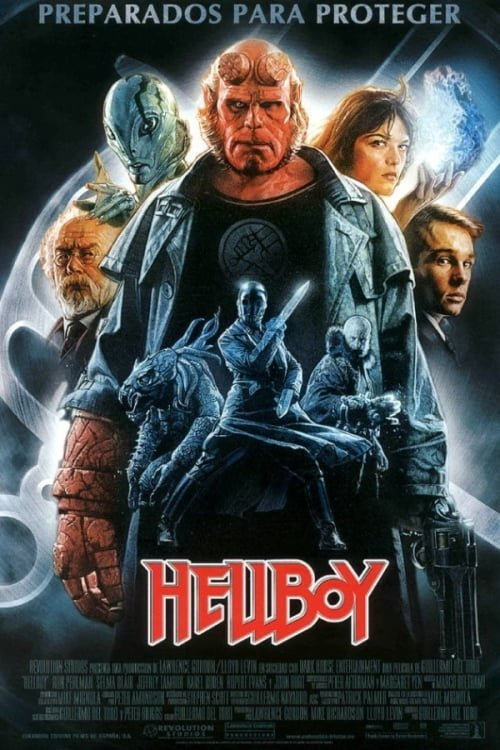

Hellboy (2004)
Sinopsis Rápida
Un demonio criado por humanos se enfrenta a su destino mientras lucha contra una amenaza apocalíptica que busca destruir el mundo. ¿Podrá un héroe infernal salvar a la humanidad?
Sinopsis Detallada
Hellboy, un demonio con un corazón humano, trabaja para la Agencia de Investigación y Defensa Paranormal (BPRD) combatiendo criaturas sobrenaturales. Cuando una antigua bruja busca resucitar a un dios apocalíptico, Hellboy deberá confrontar su propia naturaleza y sus demonios internos para detenerla. La película es una mezcla explosiva de acción, terror y humor oscuro, que explora temas de destino, identidad y la lucha entre el bien y el mal. La estética visual única y las criaturas de diseño magistral aportan un atractivo visual inigualable.
¿Por qué tenés que verla?
- Una adaptación fiel y emocionante del cómic de Mike Mignola.
- La dirección de Guillermo del Toro crea una atmósfera visualmente impactante y única.
- Su influencia se puede observar en películas posteriores del género de superhéroes oscuros.
- Ron Perlman ofrece una interpretación icónica del personaje principal.
Idea Extra
Comparación de las adaptaciones cinematográficas de Hellboy: Análisis de las diferencias entre la versión de 2004 y la de 2019.
{{CONTENIDO_RELACIONADO}}